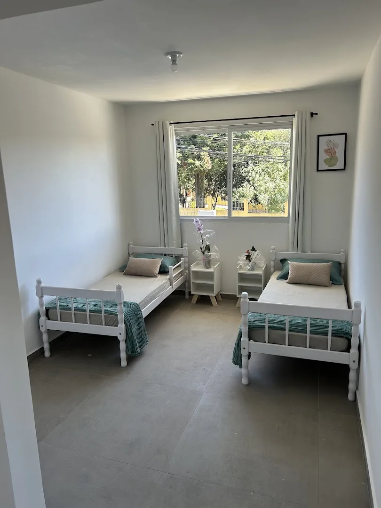
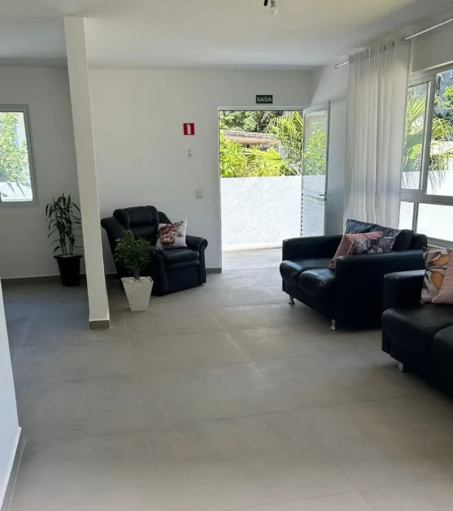
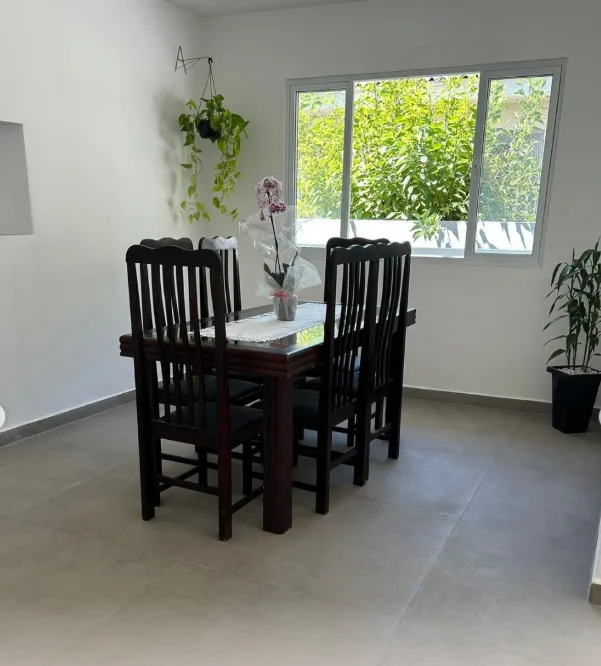
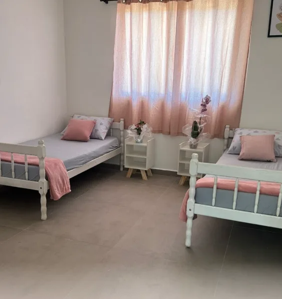
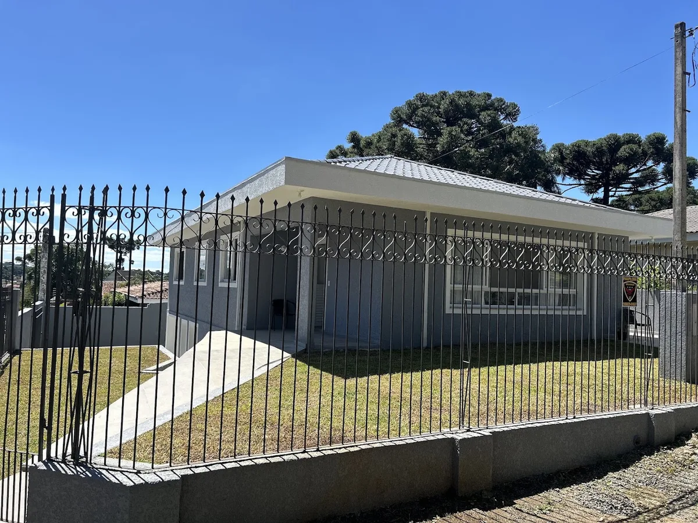
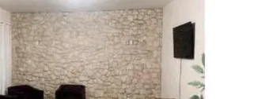
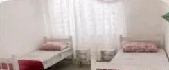
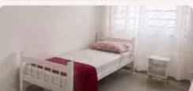
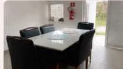
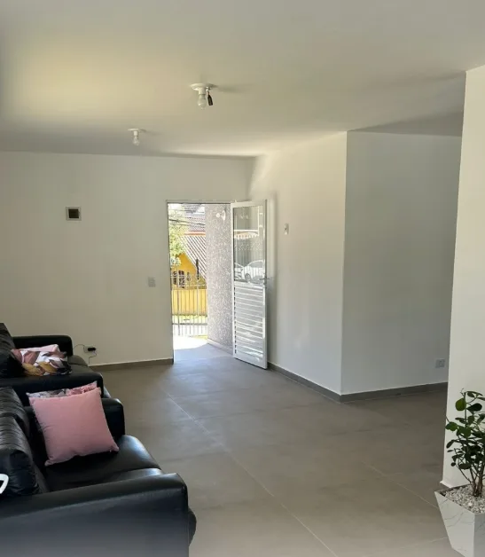

Vó Edith Mercês
Rua Dom Alberto Gonçalves, 532





Só para elas
No Vó Edith, cada moradora é tratada com dignidade, atenção e acolhimento. A casa é exclusiva para mulheres, com equipe especializada e atendimento humanizado.
Duas unidades
O mesmo jeito de cuidar, em dois bairros de Curitiba.
Rua Dom Alberto Gonçalves, 532




Rua Maximino Zanon, 464




Os ambientes

Bem-estar
Além da equipe de saúde, o Vó Edith reserva momentos para relaxar, sorrir e cuidar do corpo e da alma.
Cardápio balanceado e individualizado.
Exercícios e movimentos que promovem saúde e qualidade de vida.
Atividades recreativas e terapêuticas.
Estímulo à memória, às emoções e à interação.
Dias de bem-estar para o corpo e a mente.
Companhia, afeto e boas conversas no dia a dia.
Onde estamos
O mapa é carregado do Google Maps, que pode usar cookies próprios.
Abrir no Google MapsRua Dom Alberto Gonçalves, 532, Curitiba
O mapa é carregado do Google Maps, que pode usar cookies próprios.
Abrir no Google MapsRua Maximino Zanon, 464, Curitiba